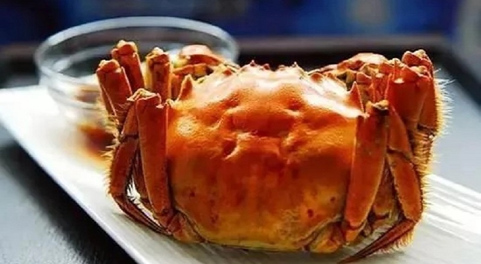

这才是吃阳澄湖大闸蟹的正确姿势!
如果你只会一种清蒸阳澄湖大闸蟹，那你如何对得起大闸蟹的鲜美？
会吃大闸蟹的人既能豪迈肆意，也可精致细腻！最后大闸蟹不光会吃完拼成各种形状，我还能愉快的玩起来~
有人说，大闸蟹除了清蒸，其它任何烹饪方法都是暴殄天物。这说法我就不乐意了，清蒸有清蒸的味道虽然能保留蟹的原汁原味，但是却不能满足所有人的口味，其实中国菜式有很多种烹饪方式，蒸炸煮焖每一种都是很有特色的。今天乐到家商城的小编就在这里为大家分享几道大闸蟹的新做法，趁阳澄湖大闸蟹还没上市多练练手，待到中秋佳节就能在亲朋好友面前露一手了！

啤酒清蒸大闸蟹
同样是清蒸，不同之处在于，这里用啤酒代替了清水。啤酒的酒香，既能中和蟹的微腥，又能激发蟹的鲜美，这道大闸蟹的做法简直是完美！
【制作须知】
1.让大闸蟹在啤酒里泡个澡，大概十分钟就可以，不要太长。
2.泡过蟹的啤酒不要倒掉，加入姜片、葱段，煮开继续用。
3.一般清蒸大闸蟹，蟹的肚子是朝上的，以免蟹黄流出。但用啤酒蒸，蟹的肚子朝下，啤酒的香气可以顺着缝隙钻入，蒸熟后特别香。
海盐焗大闸蟹
盐焗既让大闸蟹所有的鲜美都锁住在蟹壳里，微微渗入的一点点盐味，又能让鲜味锦上添花。
【制作须知】
1.洗干净的大闸蟹，一定要用厨房纸彻底擦干表面水分。如果湿焗，大闸蟹会吸收太多盐分，非常咸，破坏鲜味。
2.一定要用粗粒的海盐，不能用我们调味的精盐替代，否则，也会非常咸。
3.海盐与姜片下锅后炒至微微发黄，就可以将大闸蟹埋进去焗了。
4.蟹一般焗15分钟，不能焗太久，久了蟹脚会被焗空。具体看螃蟹的盖子，都红了就捞出来，还有较多青黑色就再盖住焗一会。
是不是按耐不住想买只蟹大展身手了？